Relevant packages
rm(list=ls())
library(tidyverse)
library(sf)## Warning: package 'sf' was built under R version 4.5.2## Linking to GEOS 3.13.1, GDAL 3.11.4, PROJ 9.7.0; sf_use_s2() is TRUElibrary(tmap)## Warning: package 'tmap' was built under R version 4.5.2library(spdep)## Warning: package 'spdep' was built under R version 4.5.2## Loading required package: spData## Warning: package 'spData' was built under R version 4.5.2## To access larger datasets in this package, install the spDataLarge
## package with: `install.packages('spDataLarge',
## repos='https://nowosad.github.io/drat/', type='source')`df <- st_read(dsn = "./data/merged_data.gpkg")## Reading layer `merged_data' from data source
## `C:\Users\kalle\OneDrive\Documenten\REMA\Thesis\labjournal_thesis_KS\labjournal_thesis_KS\data\merged_data.gpkg'
## using driver `GPKG'
## Simple feature collection with 20163 features and 38 fields
## Geometry type: MULTIPOLYGON
## Dimension: XY
## Bounding box: xmin: 62856.61 ymin: 430398.8 xmax: 119527.1 ymax: 471972.6
## Projected CRS: Amersfoort / RD NewLooking at the solar panel data again
#leveringsrichting from character to numeric
class(df$leveringsrichting)## [1] "character"df$leveringsrichting <- as.numeric(gsub(",", ".", df$leveringsrichting))
#reverse
df<- df|> mutate(teruglevering = 100 - leveringsrichting)
summary(df$teruglevering)## Min. 1st Qu. Median Mean 3rd Qu. Max.
## 0.00 0.00 6.67 15.32 23.81 100.00hist(df$teruglevering)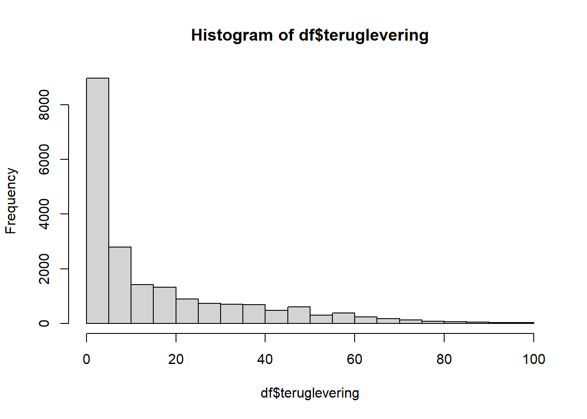
df %>% filter(teruglevering != 0) %>% nrow()## [1] 12819#dichotomous variable
df <- df |> mutate (teruglevering_d = if_else(teruglevering>0, 1, 0))
summary(df$teruglevering_d)## Min. 1st Qu. Median Mean 3rd Qu. Max.
## 0.0000 0.0000 1.0000 0.6358 1.0000 1.0000#plots over time
df |>
group_by(year) |>
summarise(yearly_avg = mean(teruglevering, na.rm = TRUE)) |>
ggplot(aes(x = year, y = yearly_avg)) +
geom_line() +
geom_point() +
scale_y_continuous(limits = c(0, 100)) +
scale_x_continuous(breaks = seq(min(df$year), max(df$year), by = 2))+
theme_minimal()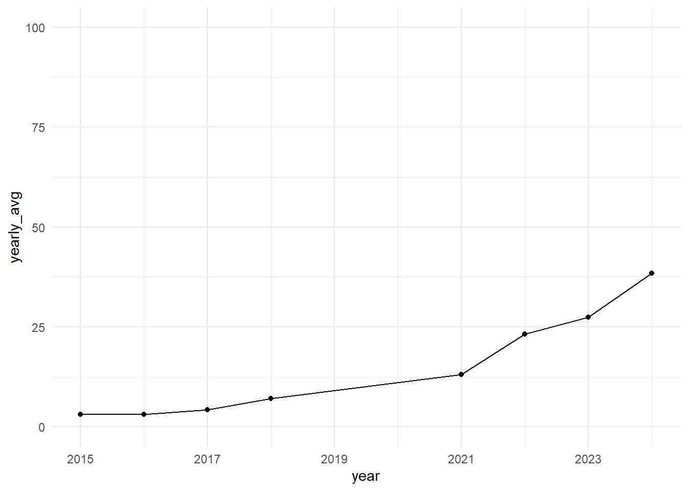
#dichotomous
df |>
group_by(year) |>
summarise(yearly_avg = mean(teruglevering_d, na.rm = TRUE) * 100) |>
ggplot(aes(x = year, y = yearly_avg)) +
geom_line() +
geom_point() +
scale_y_continuous(limits = c(0, 100)) +
scale_x_continuous(breaks = seq(min(df$year), max(df$year), by = 2))+
theme_minimal()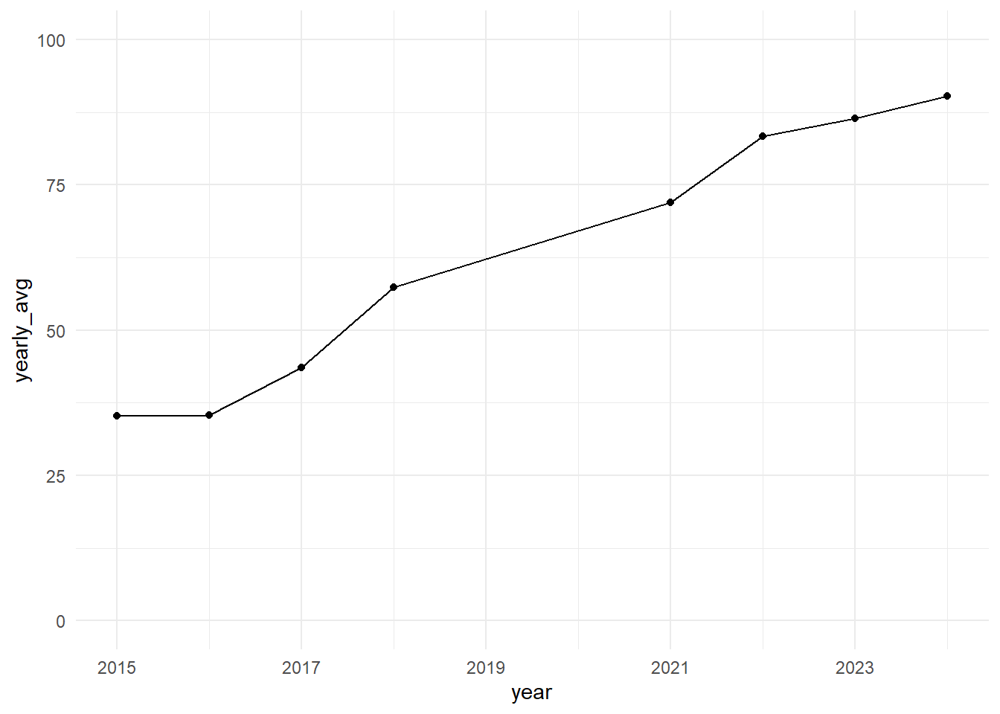
Let’s plot the data on a map using ggplot.
#plot the data
df |>
filter(year == 2024) |>
ggplot(
aes(fill = teruglevering)
) +
geom_sf(color = NA) +
scale_fill_viridis_c(option = "plasma", name = "Energy feed-in") +
theme_minimal()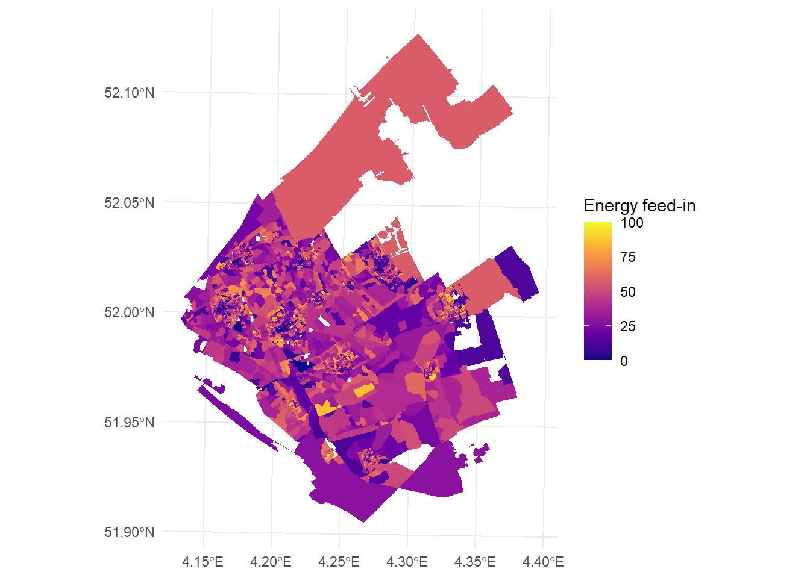
Now we have only mapped the data for a single year. Now, we create a map of all the years using tmap:
tmap_mode("plot")## ℹ tmap modes "plot" - "view"
## ℹ toggle with `tmap::ttm()`tm_shape(df) +
tm_fill("teruglevering") +
tm_facets(by = "year")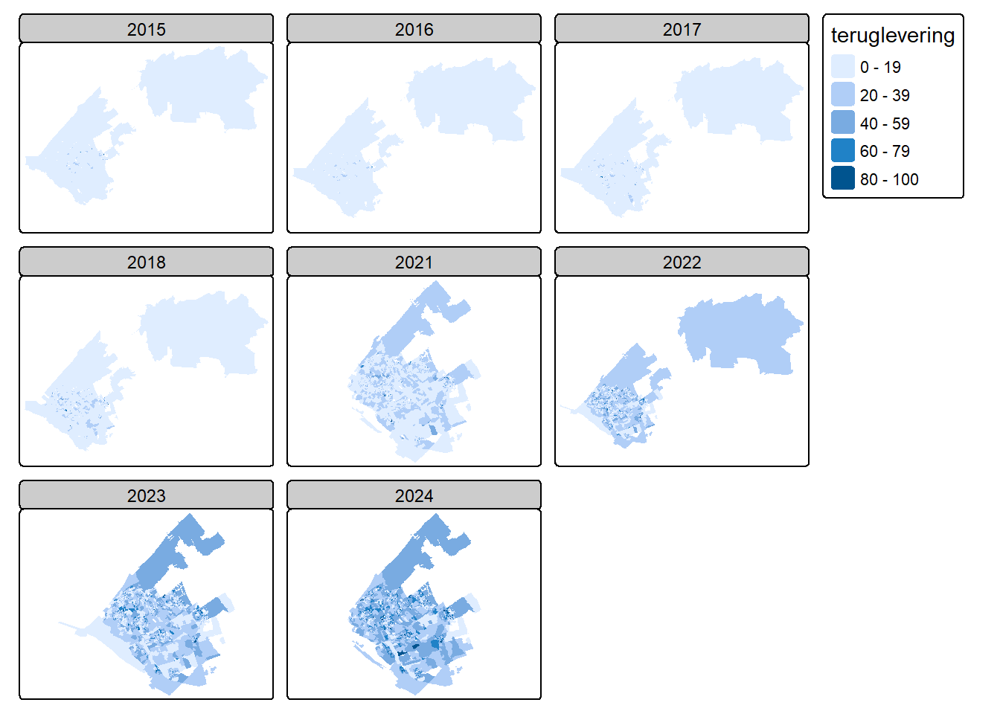
Looking at relevant variables. High levels of missingness in the data! Maybe I can use spatial + temporal interpolation to impute the data?
## ethniticity
summary(df$percentage_geb_nederland_herkomst_nederland) #565 NAs## Min. 1st Qu. Median Mean 3rd Qu. Max. NA's
## 5.455 80.000 90.000 84.363 90.000 100.000 565sum(
is.na(df$percentage_geb_nederland_herkomst_nederland) &
is.na(df$percentage_geb_nederland_herkomst_overig_europa) &
is.na(df$percentage_geb_nederland_herkomst_buiten_europa) &
is.na(df$percentage_geb_buiten_nederland_herkomst_europa) &
is.na(df$percentage_geb_buiten_nederland_herkmst_buiten_europa) &
is.na(df$percentage_westerse_migr_achtergr) &
is.na(df$percentage_niet_westerse_migr_achtergr)
) #533 truly missing, 32 likely value close to 0. ## [1] 533hist(df$percentage_geb_nederland_herkomst_nederland)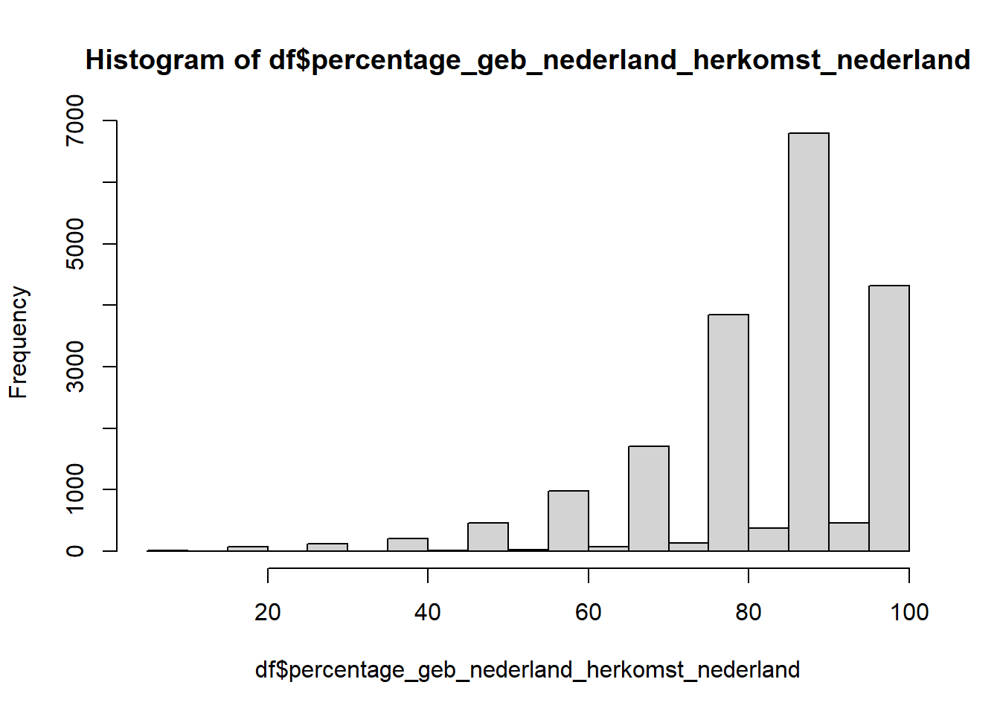
## home ownership
summary(df$percentage_koopwoningen) #4836 NAs## Min. 1st Qu. Median Mean 3rd Qu. Max. NA's
## 10.0 80.0 90.0 83.7 100.0 100.0 4836df |> filter(is.na(percentage_koopwoningen) & is.na(percentage_huurwoningen)) |> summarise(count = n()) #3958 of those have missing value on both rented and owned homes## Simple feature collection with 1 feature and 1 field
## Geometry type: MULTIPOLYGON
## Dimension: XY
## Bounding box: xmin: 68730.71 ymin: 437747.8 xmax: 84877.15 ymax: 450662.6
## Projected CRS: Amersfoort / RD New
## count geom
## 1 3958 MULTIPOLYGON (((70500.13 44...df |> filter(is.na(percentage_koopwoningen) & !is.na(percentage_huurwoningen)) |> summarise(count = n()) #878 streets likely have close to 0 home ownership## Simple feature collection with 1 feature and 1 field
## Geometry type: MULTIPOLYGON
## Dimension: XY
## Bounding box: xmin: 70538.6 ymin: 438776.5 xmax: 83276.29 ymax: 450259.5
## Projected CRS: Amersfoort / RD New
## count geom
## 1 878 MULTIPOLYGON (((70560.21 44...df |>
group_by(year) |>
summarise(missing_count = sum(is.na(percentage_koopwoningen))) # about 600 NAs in every year## Simple feature collection with 8 features and 2 fields
## Geometry type: MULTIPOLYGON
## Dimension: XY
## Bounding box: xmin: 62856.61 ymin: 430398.8 xmax: 119527.1 ymax: 471972.6
## Projected CRS: Amersfoort / RD New
## # A tibble: 8 × 3
## year missing_count geom
## <dbl> <int> <MULTIPOLYGON [m]>
## 1 2015 602 (((67757 443783, 67716 443803, 67675 443824, 67614 443854…
## 2 2016 598 (((67843.76 443750, 67766.7 443790.8, 67209.65 444038.8, …
## 3 2017 593 (((67843.76 443750, 67766.7 443790.8, 67209.65 444038.8, …
## 4 2018 626 (((65359.35 444766.2, 65065.21 444883.1, 65041.03 444892.…
## 5 2021 599 (((70474.74 442709, 70479.05 442709.9, 70566.63 442708.8,…
## 6 2022 597 (((65751.47 443924.7, 65101.49 444222.6, 65225.73 444465.…
## 7 2023 605 (((66528.16 443833.8, 66261.06 443820.9, 65860.24 443874.…
## 8 2024 616 (((69860.34 442970, 69859.23 442986.6, 69861.07 442997.3,…hist(df$percentage_koopwoningen)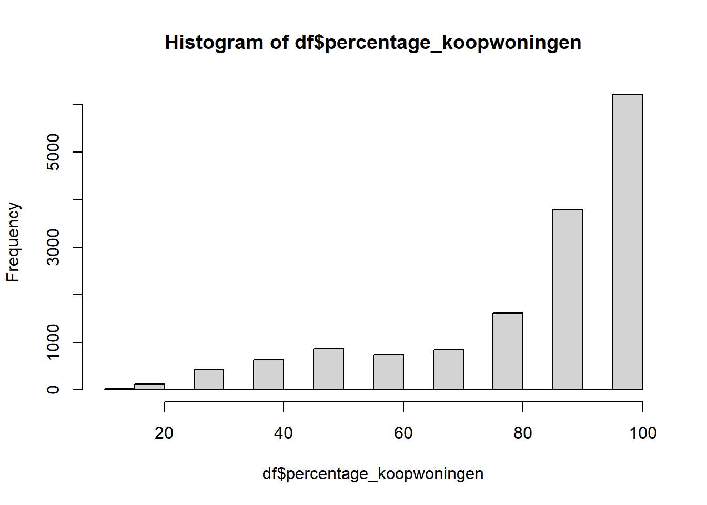
## property value
summary(df$gemiddelde_woz_waarde_woning) #6219 NAs## Min. 1st Qu. Median Mean 3rd Qu. Max. NA's
## 58.0 224.0 298.0 325.5 391.0 1374.0 6219df |>
group_by(year) |>
summarise(missing_count = sum(is.na(gemiddelde_woz_waarde_woning))) #no data in 2015 and 2024## Simple feature collection with 8 features and 2 fields
## Geometry type: MULTIPOLYGON
## Dimension: XY
## Bounding box: xmin: 62856.61 ymin: 430398.8 xmax: 119527.1 ymax: 471972.6
## Projected CRS: Amersfoort / RD New
## # A tibble: 8 × 3
## year missing_count geom
## <dbl> <int> <MULTIPOLYGON [m]>
## 1 2015 2422 (((67757 443783, 67716 443803, 67675 443824, 67614 443854…
## 2 2016 128 (((67843.76 443750, 67766.7 443790.8, 67209.65 444038.8, …
## 3 2017 252 (((67843.76 443750, 67766.7 443790.8, 67209.65 444038.8, …
## 4 2018 310 (((65359.35 444766.2, 65065.21 444883.1, 65041.03 444892.…
## 5 2021 301 (((70474.74 442709, 70479.05 442709.9, 70566.63 442708.8,…
## 6 2022 91 (((65751.47 443924.7, 65101.49 444222.6, 65225.73 444465.…
## 7 2023 90 (((66528.16 443833.8, 66261.06 443820.9, 65860.24 443874.…
## 8 2024 2625 (((69860.34 442970, 69859.23 442986.6, 69861.07 442997.3,…hist(df$gemiddelde_woz_waarde_woning)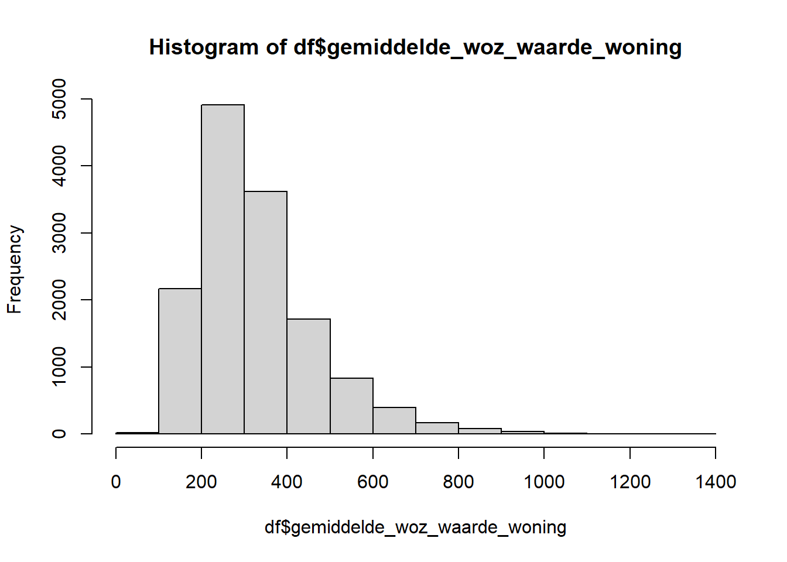
## electricity use
summary(df$gemiddeld_elektriciteitsverbruik_woning) #3476 NAs## Min. 1st Qu. Median Mean 3rd Qu. Max. NA's
## 810 2440 2990 3095 3650 7780 3476df |>
group_by(year) |>
summarise(missing_count = sum(is.na(gemiddeld_elektriciteitsverbruik_woning))) #no data in 2024## Simple feature collection with 8 features and 2 fields
## Geometry type: MULTIPOLYGON
## Dimension: XY
## Bounding box: xmin: 62856.61 ymin: 430398.8 xmax: 119527.1 ymax: 471972.6
## Projected CRS: Amersfoort / RD New
## # A tibble: 8 × 3
## year missing_count geom
## <dbl> <int> <MULTIPOLYGON [m]>
## 1 2015 136 (((67757 443783, 67716 443803, 67675 443824, 67614 443854…
## 2 2016 128 (((67843.76 443750, 67766.7 443790.8, 67209.65 444038.8, …
## 3 2017 127 (((67843.76 443750, 67766.7 443790.8, 67209.65 444038.8, …
## 4 2018 158 (((65359.35 444766.2, 65065.21 444883.1, 65041.03 444892.…
## 5 2021 92 (((70474.74 442709, 70479.05 442709.9, 70566.63 442708.8,…
## 6 2022 103 (((65751.47 443924.7, 65101.49 444222.6, 65225.73 444465.…
## 7 2023 107 (((66528.16 443833.8, 66261.06 443820.9, 65860.24 443874.…
## 8 2024 2625 (((69860.34 442970, 69859.23 442986.6, 69861.07 442997.3,…hist(df$gemiddeld_elektriciteitsverbruik_woning)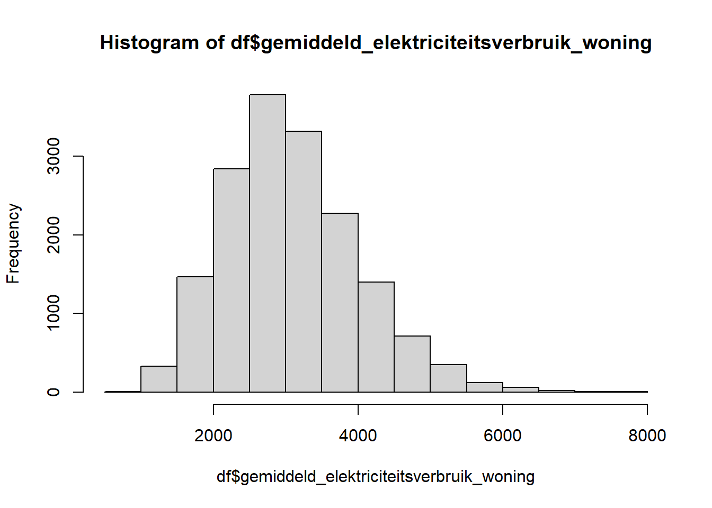
## age
sum(is.na(df$aantal_inwoners_0_tot_15_jaar) & is.na(df$aantal_inwoners_15_tot_25_jaar) & is.na(df$aantal_inwoners_25_tot_45_jaar) & is.na(df$aantal_inwoners_45_tot_65_jaar) & is.na(df$aantal_inwoners_65_jaar_en_ouder)) #0 NAs!## [1] 0sum(df$aantal_inwoners == 0) #but 411 streets with 0 residents## [1] 411#estimating the average age
df <- df |>
mutate(
age_avg = (
(7.5 * aantal_inwoners_0_tot_15_jaar) +
(20 * aantal_inwoners_15_tot_25_jaar) +
(35 * aantal_inwoners_25_tot_45_jaar) +
(55 * aantal_inwoners_45_tot_65_jaar) +
(75 * aantal_inwoners_65_jaar_en_ouder)
)
/ aantal_inwoners
)
summary(df$age_avg)## Min. 1st Qu. Median Mean 3rd Qu. Max. NA's
## 0.00 31.06 37.81 38.30 44.50 83.75 411hist(df$age_avg)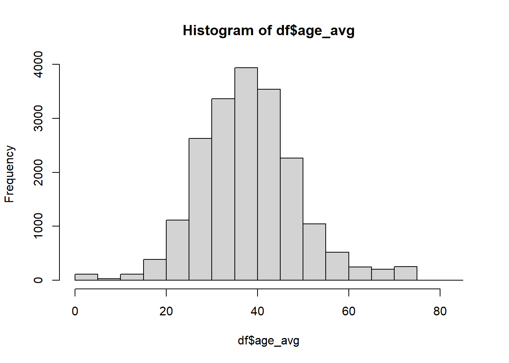
## income
summary(df$gemiddeld_inkomen_huishouden) #15858 NAs## Min. 1st Qu. Median Mean 3rd Qu. Max. NA's
## 17.30 33.60 36.50 36.72 39.10 70.20 15858df |>
group_by(year) |>
summarise(missing_count = sum(is.na(gemiddeld_inkomen_huishouden))) #data only from 2021 and 2022## Simple feature collection with 8 features and 2 fields
## Geometry type: MULTIPOLYGON
## Dimension: XY
## Bounding box: xmin: 62856.61 ymin: 430398.8 xmax: 119527.1 ymax: 471972.6
## Projected CRS: Amersfoort / RD New
## # A tibble: 8 × 3
## year missing_count geom
## <dbl> <int> <MULTIPOLYGON [m]>
## 1 2015 2422 (((67757 443783, 67716 443803, 67675 443824, 67614 443854…
## 2 2016 2440 (((67843.76 443750, 67766.7 443790.8, 67209.65 444038.8, …
## 3 2017 2464 (((67843.76 443750, 67766.7 443790.8, 67209.65 444038.8, …
## 4 2018 2493 (((65359.35 444766.2, 65065.21 444883.1, 65041.03 444892.…
## 5 2021 410 (((70474.74 442709, 70479.05 442709.9, 70566.63 442708.8,…
## 6 2022 408 (((65751.47 443924.7, 65101.49 444222.6, 65225.73 444465.…
## 7 2023 2596 (((66528.16 443833.8, 66261.06 443820.9, 65860.24 443874.…
## 8 2024 2625 (((69860.34 442970, 69859.23 442986.6, 69861.07 442997.3,…hist(df$gemiddeld_inkomen_huishouden)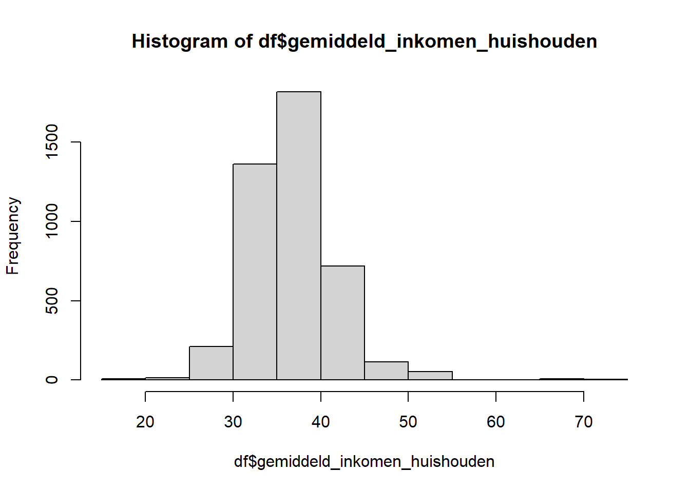
summary(df$percentage_laag_inkomen_huishouden) #7793 NAs## Min. 1st Qu. Median Mean 3rd Qu. Max. NA's
## 1.9 24.7 31.1 32.5 38.2 100.0 7793df |>
group_by(year) |>
summarise(missing_count = sum(is.na(percentage_laag_inkomen_huishouden))) #no data in 2023 and 2024## Simple feature collection with 8 features and 2 fields
## Geometry type: MULTIPOLYGON
## Dimension: XY
## Bounding box: xmin: 62856.61 ymin: 430398.8 xmax: 119527.1 ymax: 471972.6
## Projected CRS: Amersfoort / RD New
## # A tibble: 8 × 3
## year missing_count geom
## <dbl> <int> <MULTIPOLYGON [m]>
## 1 2015 451 (((67757 443783, 67716 443803, 67675 443824, 67614 443854…
## 2 2016 438 (((67843.76 443750, 67766.7 443790.8, 67209.65 444038.8, …
## 3 2017 436 (((67843.76 443750, 67766.7 443790.8, 67209.65 444038.8, …
## 4 2018 429 (((65359.35 444766.2, 65065.21 444883.1, 65041.03 444892.…
## 5 2021 410 (((70474.74 442709, 70479.05 442709.9, 70566.63 442708.8,…
## 6 2022 408 (((65751.47 443924.7, 65101.49 444222.6, 65225.73 444465.…
## 7 2023 2596 (((66528.16 443833.8, 66261.06 443820.9, 65860.24 443874.…
## 8 2024 2625 (((69860.34 442970, 69859.23 442986.6, 69861.07 442997.3,…hist(df$percentage_laag_inkomen_huishouden)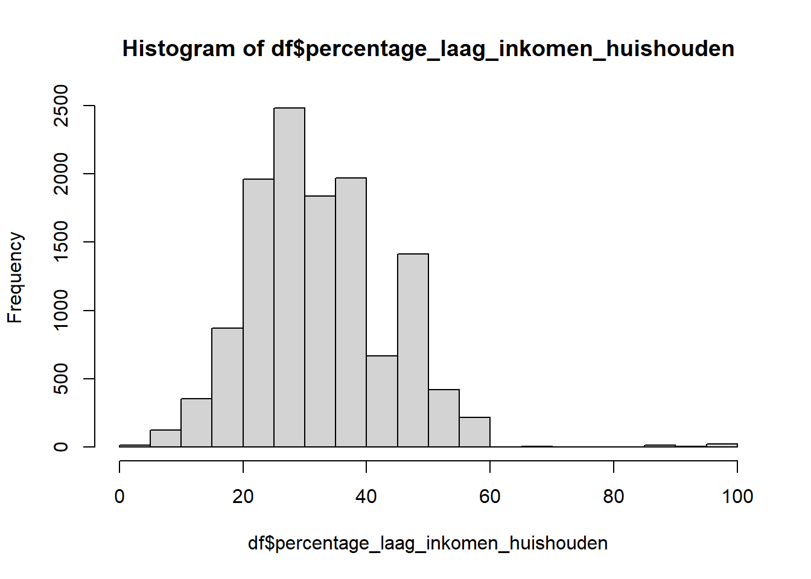
summary(df$percentage_hoog_inkomen_huishouden) #7796 NAs## Min. 1st Qu. Median Mean 3rd Qu. Max. NA's
## 0.00 18.00 25.00 25.64 30.90 76.90 7796hist(df$percentage_hoog_inkomen_huishouden)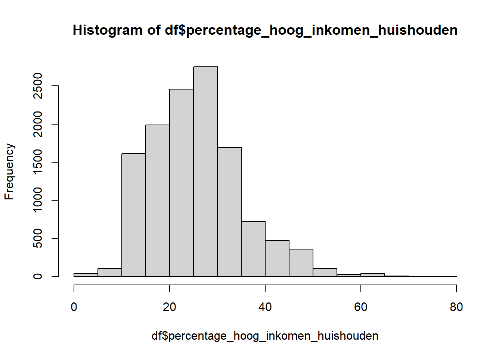
## density/urbanity
summary(df$omgevingsadressendichtheid) #106 NAs## Min. 1st Qu. Median Mean 3rd Qu. Max. NA's
## 2 834 1394 1441 1966 4945 106hist(df$omgevingsadressendichtheid)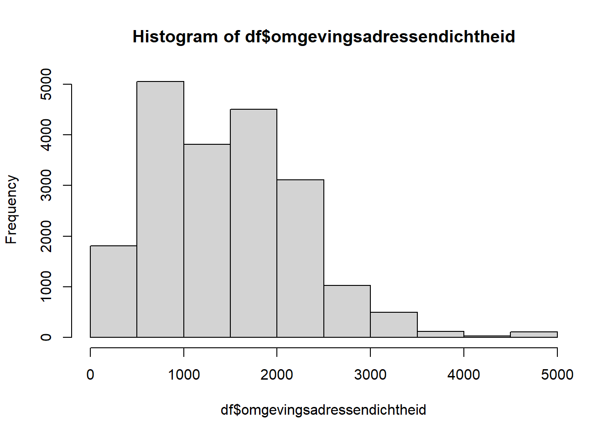
summary(df$stedelijkheid) #106 NAs## Min. 1st Qu. Median Mean 3rd Qu. Max. NA's
## 1.000 2.000 3.000 2.874 4.000 5.000 106hist(df$stedelijkheid)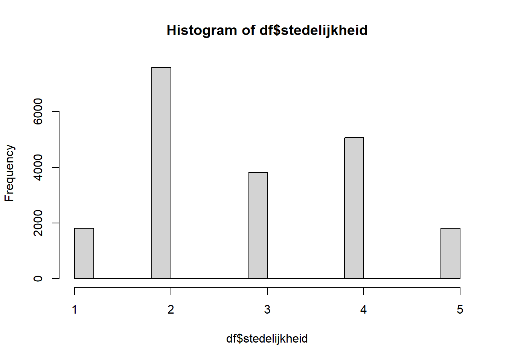
Calculate the spatial autocorrelation.
df_24 <- df |> filter (year == 2024)
nb <- poly2nb(df_24)## Warning in poly2nb(df_24): some observations have no neighbours;
## if this seems unexpected, try increasing the snap argument.## Warning in poly2nb(df_24): neighbour object has 2 sub-graphs;
## if this sub-graph count seems unexpected, try increasing the snap argument.lw <- nb2listw(nb, style = "W", zero.policy = T)
moran_result <- moran.test(df_24$teruglevering, lw, zero.policy = TRUE)Analysis:
Spatial lag panel model (slpm package)?
Social network analysis?
Panel/multilevel regression with installed base effect (energy feed-in by “neighbors” in the previous year)
This allows you to interact on the installed-base variable. But:
For the effect of density/urbanity, you have focus on the influence between two streets in the same 500m by 500m square. How?
For the effect of demographic similarity, you have to calculate the similarity for each combination of streets and use that in the interaction with the installed-base variable. How?
Weight matrix by distance or “queen” contiguity?
For the effect of lucrativity, look at period effect? Or add data per year with installation price and eletricity price?